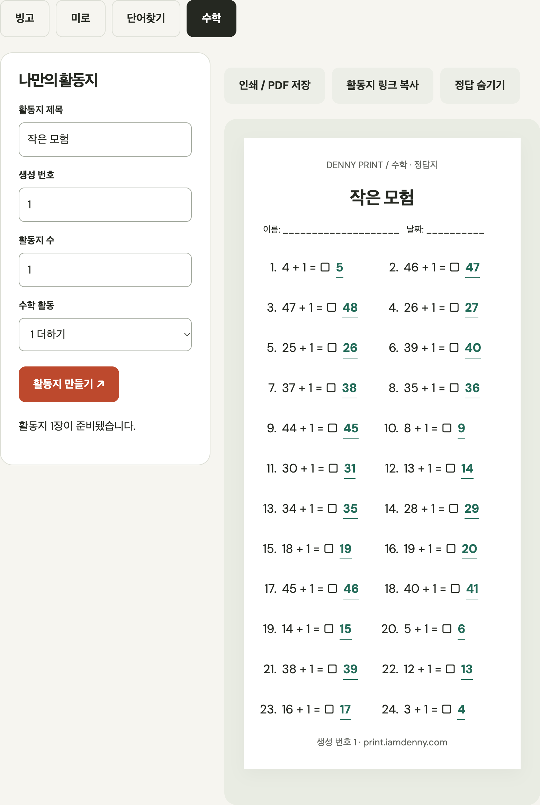

PRINTABLE ACTIVITIES · DENNY PRINT
활동지와 정답지를
따로 인쇄하기
수업이나 모임에 필요한 문제지를 만들고, 같은 설정으로 정답지를 따로 준비해 보세요. Denny Print는 수학 활동지, 빙고, 미로와 영어 단어 찾기를 편집하고 인쇄할 수 있습니다.
활동지는 이렇게 만듭니다
- 활동 종류를 고릅니다. 수학 연습이 필요하면 더하기·빼기·곱셈·나눗셈 활동을, 함께 즐기는 활동이 필요하면 빙고·미로·단어 찾기를 살펴보세요.
- 주제와 난이도에 맞게 설정합니다. 빙고는 직접 단어를 넣거나 제공되는 주제 목록을 이용할 수 있습니다. 단어 찾기는 영문 A–Z 단어를 사용합니다.
- 화면에서 내용을 확인하고 조정합니다. 인쇄하기 전에 제목과 문제를 읽어 보고, 아이들이 풀 수 있는 분량인지 확인하세요.
- 정답을 숨긴 채 문제지를 인쇄합니다. 참가자에게 나눠 줄 버전은 정답이 보이지 않도록 확인한 뒤 인쇄합니다.
- 정답을 표시하고 교사용 사본을 인쇄합니다. 답이 필요한 활동은 정답 표시를 켜고 다시 인쇄하면 문제지와 정답지를 나눠 준비할 수 있습니다.
같은 제목과 생성 번호로 활동지를 만든 뒤 정답 표시를 껐다 켜면 문제는 그대로이고 정답만 함께 보입니다. Denny Print에서 확인한 24문항 결과 중 앞의 세 문항은 다음과 같았습니다. 이 숫자는 재현 가능한 예시 자료이며 모든 설정의 결과를 뜻하지 않습니다.
| 순서 | 정답 숨김 | 정답 표시 |
|---|---|---|
| 1 | 4 + 1 = □ | 4 + 1 = □ 5 |
| 2 | 46 + 1 = □ | 46 + 1 = □ 47 |
| 3 | 47 + 1 = □ | 47 + 1 = □ 48 |
확인한 화면에는 인쇄 / PDF 저장 버튼이 있어요. 먼저 정답을 숨긴 채 눌러 학습자용 출력을 만들고, 같은 활동에서 정답 보기를 켠 뒤 다시 눌러 답안용 출력을 만드세요. 인쇄 창에서 용지 방향과 배율을 확인한 후 저장하거나 출력하면 됩니다.


판 번호가 같은 활동지는 같은 문제 구성을 만듭니다. 같은 자료를 다시 인쇄하거나 설정을 공유할 때 번호를 유지하고, 새 구성을 원할 때 번호를 바꿔 보세요.
활동 종류에 따라 확인할 점
빙고
모임의 주제에 맞춰 단어를 직접 적거나 제공되는 언어별 주제 목록에서 고를 수 있습니다. 단어를 입력한 뒤 카드에 잘 들어갔는지 확인하고 인쇄하세요. 같은 단어가 반복되면 활동의 재미가 달라질 수 있으니 목록을 미리 살펴보는 게 좋습니다.
영어 단어 찾기
단어찾기 격자는 영문 A–Z를 사용하며, 3개에서 12개까지 단어를 넣을 수 있습니다. 한 단어는 최대 12글자입니다. 화면 언어를 바꾸더라도 격자에 들어가는 단어 문자가 한글이나 일본어로 바뀌는 것은 아닙니다.
수학 활동지
인쇄 전에 연산 종류와 숫자 범위를 확인하세요. 아이에게 맞는 난이도인지 문제 몇 개를 직접 풀어 보고, 정답 표시가 문제지에 함께 인쇄되지 않는지도 확인하면 좋습니다.
공유하기 전에 한 번 더 확인하세요
설정 공유 기능은 다른 사람이 같은 활동 구성을 열어 볼 때 유용합니다. 이름이나 개인 정보가 들어간 단어 목록은 공개 링크에 포함해도 되는지 확인하고 공유하세요. 활동지가 외부 자료를 사용한다면 그 자료의 이용 조건도 확인해야 합니다.
활동 종류를 골라 화면에서 편집하고 바로 인쇄해 보세요.